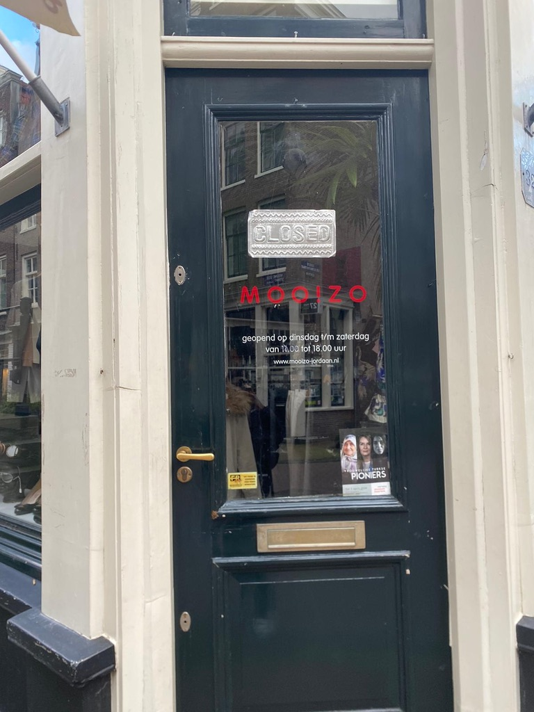

Home
Over Moo!zo
Sinds 2009 is Moo!zo de winkel voor 2e hands merkkleding. Gelegen in de nieuwe Leliestraat in de Jordaan, zit Moo!zo dicht bij vele bezienswaardigheden zoals het Anne Frankhuis en de Westertoren. Deze buurt is dus een trekpleister voor zowel Amsterdammers, als mensen uit de provincie en zelfs toeristen van over de hele wereld.
Meer informatieHoe werkt het?
Bij Moo!zo kun je uitsluitend merkkleding, accessoires, riemen, schoenen, tassen en sieraden inleveren. Zolang deze maar schoon, gestreken en "up to date" zijn. Moo!zo zal deze voor je proberen te verkopen. Maar wat gebeurt er als het niet lukt om de items te verkopen?
Meer informatieLocatie & contact
Voor de algemene informatie over Moo!zo zoals locatie, openingstijden en contact mogelijkheden kun je hier terecht.
Meer informatie